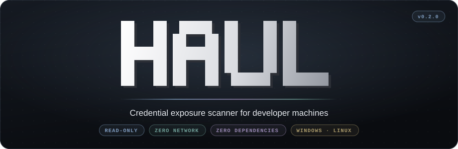
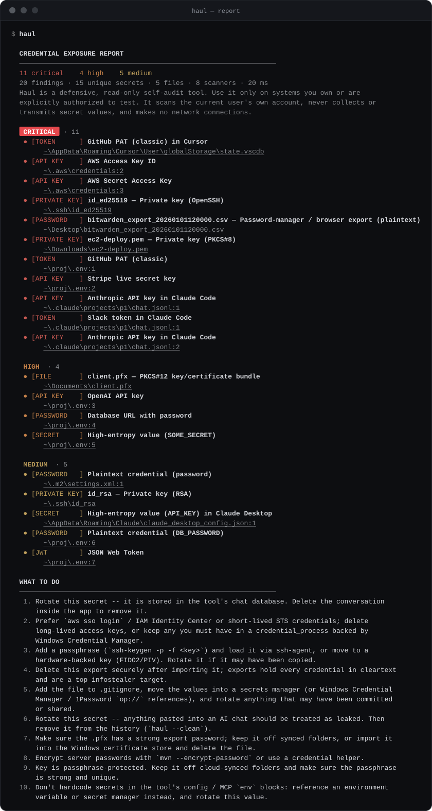
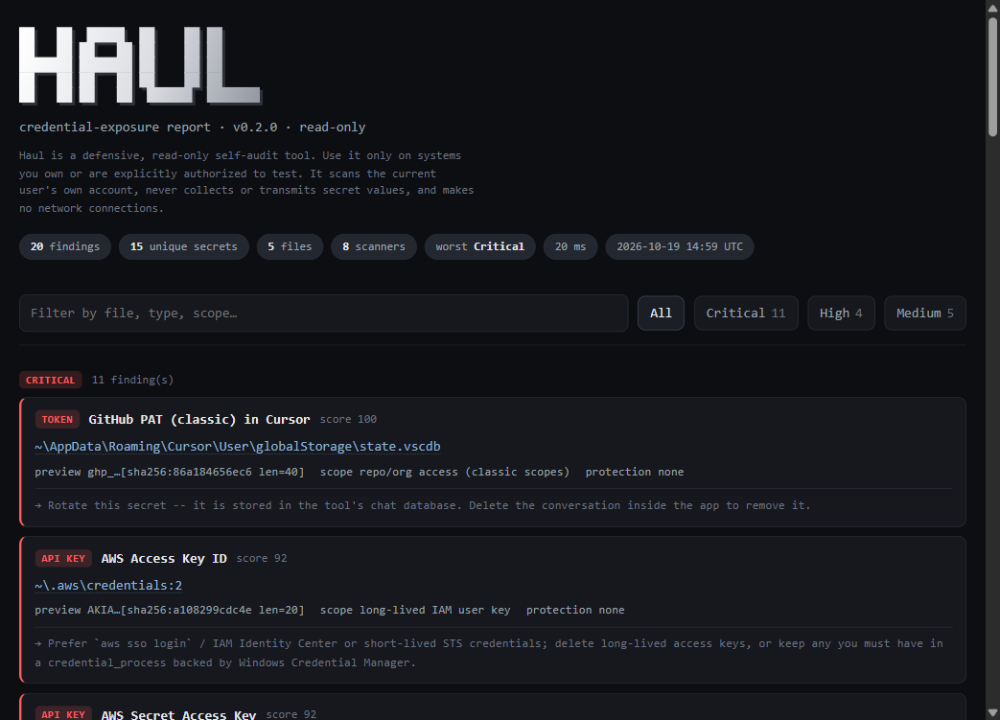
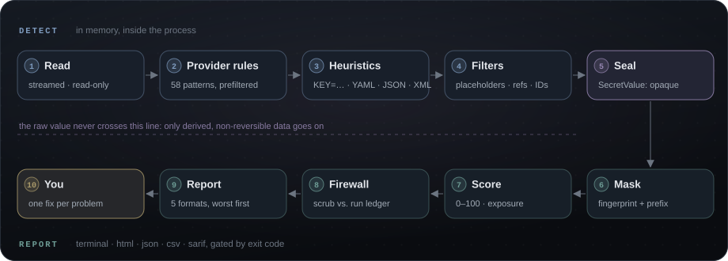
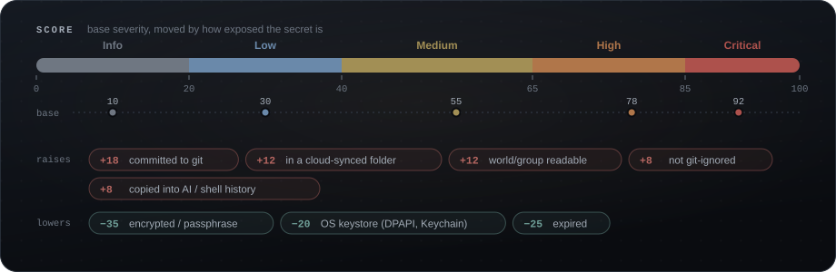
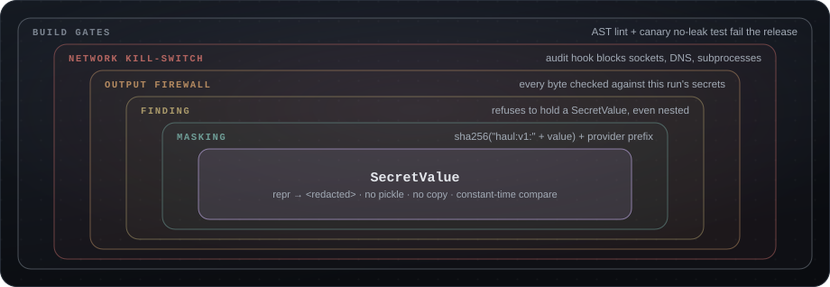

Nine scanners, one pass
Cloud and package CLIs, SSH keys, .env files, shell and PowerShell history, environment variables, browsers, desktop apps and sensitive files.

Haul finds every API key, token, SSH key and password lying where stealer malware looks first, including your AI coding tools' chat history, scores how exposed each one is, and tells you exactly how to fix it. It never reads a secret out.
Most secret scanners look at repositories. Haul looks at your machine: the home folder, project folders, app-data stores and AI-tool transcripts that never reach a repo but sit on disk, readable by anything you run.
Cloud and package CLIs, SSH keys, .env files, shell and PowerShell history, environment variables, browsers, desktop apps and sensitive files.
Claude Code, Cursor, Copilot, Windsurf, Codex, Gemini CLI and more, with transcripts streamed and SQLite chat stores read read-only.
Knows whether a .env is ignored, not ignored, or already committed, by reading .git directly. Git is never executed.
58 provider rules, heuristics for assignments, YAML, JSON and XML, strict false-positive filters and a 0–100 exposure score.
Secrets are sealed in memory the moment they're found. Reports carry only a non-reversible fingerprint.
An irreversible audit hook blocks sockets, DNS and subprocesses. Pure standard library, so there is no supply chain to attack.
A worst-first terminal view with clickable paths, a self-contained HTML report, plus JSON, CSV and SARIF 2.1.0.
An opt-in, byte-exact redactor removes leaked keys from AI-chat transcripts, with a backup first and a dry run by default.
Every finding names its kind, what it is and where it lives. Paths are clickable, and each fix appears once.


Provider rules run first, heuristics second, then strict filters. Anything real is sealed; only a fingerprint moves on.


Each layer would stop a leak on its own. Together they make disclosure a build failure, not a runtime hope.

Haul needs Python 3.11 or newer and nothing else. It runs on Windows and Linux.
| Run this | To get |
|---|---|
haul | The full scan, worst findings first |
haul --min-severity high | Only what matters most |
haul -f html -o haul-report.html | A shareable HTML report |
haul --only ai-tools | Just your AI coding tools |
haul -f sarif -o haul.sarif --fail-on high | A CI gate with SARIF for code scanning |
haul --clean | A dry run of redacting secrets from AI-chat history |